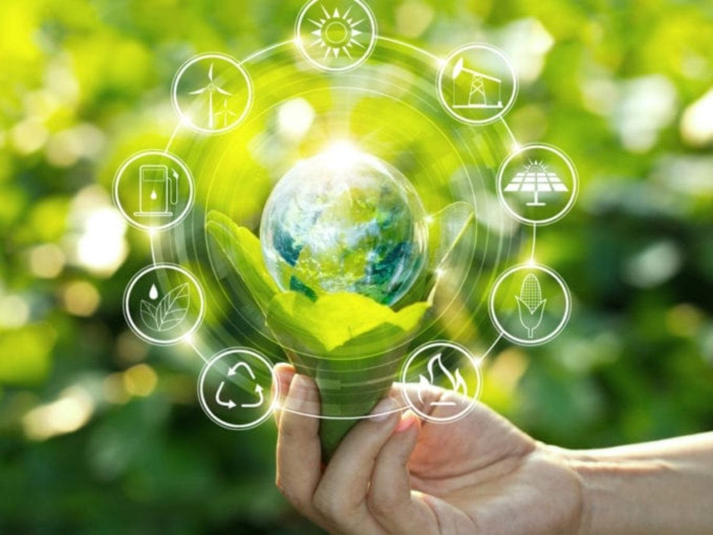

¿COMO OBTENER UN BUEN DESARROLLO SUSTENTABLE?
Es difícil ver y aceptar que los años pasan y en muchos países aun el desarrollo sostenible no es ni siquiera un tema central, pero la pregunta es; Que necesitan los países para lograr un desarrollo sostenible?
Esta más que claro que lograr desarrollo sostenible implica cooperación internacional que tenga como fundamento:
- El derecho al desarrollo de todo país: los límites planetarios no son ningún motivo para cerrarle la puerta al desarrollo.
- Derechos humanos e inclusión social: implica igualdad de oportunidades, igualdad de trato ante la ley e igualdad de acceso a los servicios públicos.
- Convergencia de estándares de vida de los países: con el tiempo la brecha entre países ricos y pobres se estrecharan considerablemente debido al crecimiento mayor de los países pobres.
- Responsabilidades y oportunidades compartidas: todos los países deben compartir la proporción del desarrollo sostenible.
En el contexto del desarrollo sostenible, hay que afrontar en los próximos años, retos y desafíos prioritarios como son:
- Garantizar un aprendizaje efectivo para todos los niños y jóvenes para su vida y sustento: Implicará que todos los niños y niñas concluyan programas de desarrollo asequibles de alta calidad en la infancia temprana y educación primaria y secundaria que los prepare para los retos de la vida moderna y gocen de un sustento digno. Que todos los jóvenes tengan acceso a una formación continua para adquirir alfabetización funcional, aritmética y habilidades para ganarse la vida por medio de un empleo digno o como independientes.
- Mejorar los sistemas agrícolas y elevar la prosperidad rural: Implicará garantizar sistemas sostenibles de producción alimentaria de altos rendimientos y alta eficiencia de agua, nutrientes del suelo y energía que apoyen dietas nutritivas con bajo nivel de pérdidas y desperdicios de comida. Detener la conversión de bosques y humedades para la agricultura, proteger los recursos del suelo y garantizar que los sistemas agrícolas sean resistentes al cambio climático. Garantizar a las zonas rurales acceso universal a recursos básicos y servicios de infraestructura.
- Frenar el cambio climático inducido por el hombre y garantizar energía limpia para todos: lo cual, implicará frenar las emisiones de gases de invernadero.
